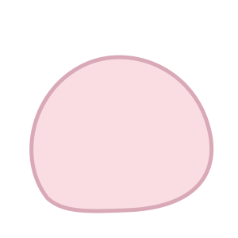
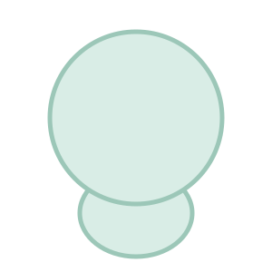

Aller au contenu
La fille au stylo rose
Accueil
Les livres
Les Doudous
À propos de l'autrice
Coin des parents
Contact
Réduire les animations
La fille
au stylo rose
[texte de Nath]


[texte de Nath]